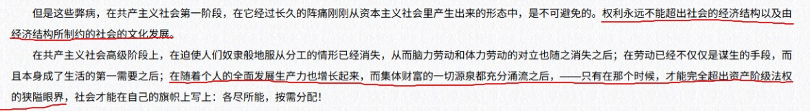

小橘春定（求愛性孤独）
@tatibana_sada
@shigure07288 @pyridine_lemon @zhiyun114514 我相信物质会丰富到任何吃穿住行都完全像空气一样免费，但是人口再生产-性身份观念恐怕是不可能的。
工业革命让纺织业的生产率进步了一万倍，但是怀胎仍然是十月。铁的「生殖」定律。而如果你开始设想人工子宫的事情——事情会变得更加复杂，得重新讨论一整套人之为人的那些观念和道德了。

時雨☭𝕷𝖊𝖋𝖙𝖈𝖔𝖒🚩🏴☠️🇵🇸🇺🇦🏳️🌈
@shigure07288
@tatibana_sada @pyridine_lemon @zhiyun114514 人性不是人权,人权同样是历史性的,人权在阶级社会的实现也受阶级影响,马克思说人权是“权利的最一般的形式”,但在阶级社会“人权本身就是特权,而私有制就是垄断。”就像劳动“像一切权利一样是一种不平等的权利。”但只有这种形式平等的人权消亡,才会实现实质的平等,而这个条件是物质极大丰富,无法人为消灭。 https://t.co/7Pry6ZT530